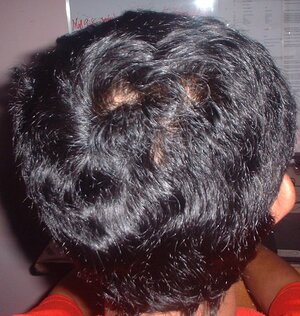

ulu 
/ʔulu/
n.
“head”
1.
n.
head
Wrd.Gloss: head
Ka seini ne lalag iyan sika se natahuan te utek ta wey ka natahuan te mata, talinga, irung wey duma pad ne nasakup kayi.
Ka ulu ku neupew su warè bulbul.
My head is bald because it doesn't have hair.
Eng. head; body part
Tag. úlo
Ceb. úlo
Ilo.: úlo
Tigwanon: ʔulu
Binukid: ʔulu
WBM: ʔulu
Ilianen: ʔulu
Kinamigin: ʔulu
Cotabato Manobo: ʔulu
Tasaday: ʔulu
Obo: ʔuu
Dibabawon: ʔuu
Sarangani: ʔolo
Tagbawa: ulu
Cagayano: ʔułu
Proto: ʔulu
OCM: Ethnoanatomy (826)
DDP: Head (2.1.1)
Online dict status: -
Usage level: B
2.
n.
the headwaters of a river or creek
Eng. headwaters; river, headwaters; creek, headwaters; stream, headwaters; source of river; river, source; creek, source; stream, source
OCM: Ethnogeography (823)
DDP: River (1.3.1.3)
Online dict status: -
Usage level: M
3.
n.
the bow (of a ship)
Eng. bow of ship; ship bow
Tag. próa; daóng
OCM: Boats (501)
Online dict status: -
Usage level: R
4.
n.
(uluwan, -an) topic; title
Syn. bunsud
Eng. topic; title
Ceb. tima
Online dict status: -
Usage level: M
5.
n.
(uluwen, -en) fond of animal's head as share
Eng. fond of animal's head as share
Online dict status: -
Usage level: M
6.
n.
(pangulu, paN-) a leader; a job; a position
Eng. leader; job; position
Ceb. katudanan
Online dict status: -
Usage level: L
n.
(uluwan, -an) leader
Eng. leader
Online dict status: -
Usage level: M
v.
for someone (egpangulu, migpangulu/impangulu, agent, eg><ø-paN-) to lead the group or community (egpanguluwan, impanguluwan/migpanguluwan/pigpanguluwan, panguluwi, location, eg><an-paN-)
Eng. lead, to
Online dict status: -
Usage level: M
Updated by: RJH,QDL,NJK,QDL,RJH
Last updated: 31/May/2017
"ulu" in text "Proving Innocence I (When Accused of Theft)"
"ulu" in text "Ke due masakit"
"ulu" in healthbook "Migpamawian ni Inuk ka sumbaley rin ne migpangaliskis"
"ulu" in healthbook "Migpamawian ni Inuk ka sumbaley rin ne migpangaliskis"
"ulu" in healthbook "Migpamawian ni Inuk ka sumbaley rin ne migpangaliskis"
"ulu" in healthbook "Migsistu si Wini"
"ulu" in healthbook "Migsistu si Wini"
This page last updated: 03-Jan-2020
Copyright © 2009-2014, Matigsalug Language Christian Association, Inc